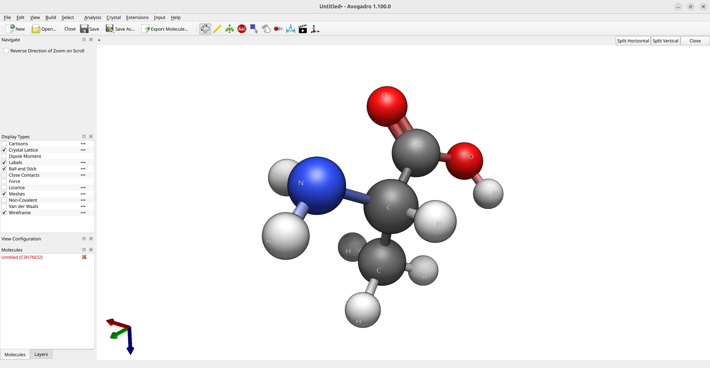

Geometry optimization¶
Basic usage¶
Optimizing a geometry means finding the geometry that minimizes the total energy for a given method.
Now, suppose you want to calculate the optimized geometry of the amino acid alanine for a given method. The first step is to have some kind of guess geometry. You can use Avogadro 2 to draw its structure and run the Open Babel optimizer (via Extensions\(\rightarrow\)Open Babel\(\rightarrow\)Optimize Geometry) to get a reasonable atom arrangement:

Figure: Creation of the input structure in Avogadro.
and with those coordinates, you can already set up your ORCA input!
Note One can use Avogadro itself to make the input, save the molecule as a .xyz and read it (see Reading from external file, or add the coordinates directly to the Structure section of the input using the "xyz" flag.
If you want to optimize the geometry, for instance using DFT, all you have to do is to choose a functional and a basis set and add OPT to the main input:
13 structure N -0.83911 0.76325 -0.31843 C 0.61442 0.72014 -0.25075 C 1.01669 -0.56167 0.49740 O 0.20095 -1.36984 0.93753 H -1.37884 0.05803 0.17605 H 1.00414 0.66192 -1.27362 C 1.17285 1.95192 0.45211 H 0.87124 2.87150 -0.05988 H 0.81191 2.01288 1.48492 H 2.26726 1.92903 0.48485 H -1.30551 1.57618 -0.71069 O 2.33980 -0.77979 0.66176 H 3.04559 -0.08055 0.28096
!PBE D4 DEF2-SVP OPT * xyz 0 1 N -0.83911 0.76325 -0.31843 C 0.61442 0.72014 -0.25075 C 1.01669 -0.56167 0.49740 O 0.20095 -1.36984 0.93753 H -1.37884 0.05803 0.17605 H 1.00414 0.66192 -1.27362 C 1.17285 1.95192 0.45211 H 0.87124 2.87150 -0.05988 H 0.81191 2.01288 1.48492 H 2.26726 1.92903 0.48485 H -1.30551 1.57618 -0.71069 O 2.33980 -0.77979 0.66176 H 3.04559 -0.08055 0.28096 *
Important Plain DFT and HF are known to perform poorly for intermolecular or weak interactions. In general it is advisable to use a dispersion correction like Grimme's D4 [Grimme2017] correction, this will correct both the energies and gradients and lead to much better results. For an example, see the dispersion corrections tutorial.
If everything is right, you should first see on the output, after the main header:
*****************************
* Geometry Optimization Run *
*****************************
Geometry optimization settings:
Update method Update .... BFGS
Choice of coordinates CoordSys .... (2022) Redundant Internals
Initial Hessian InHess .... Almloef's Model
Max. no of cycles MaxIter .... 50
Convergence Tolerances:
Energy Change TolE .... 5.0000e-06 Eh
Max. Gradient TolMAXG .... 3.0000e-04 Eh/bohr
RMS Gradient TolRMSG .... 1.0000e-04 Eh/bohr
Max. Displacement TolMAXD .... 4.0000e-03 bohr
RMS Displacement TolRMSD .... 2.0000e-03 bohr
Strict Convergence .... False
[...]
where some of the parameters for the optimization are written.
Then the SCF runs, followed by the calculation of a gradient and information related the current step is given:
.--------------------.
----------------------|Geometry convergence|-------------------------
Item value Tolerance Converged
---------------------------------------------------------------------
RMS gradient 0.0111840906 0.0001000000 NO
MAX gradient 0.0602175515 0.0003000000 NO
RMS step 0.0320147074 0.0020000000 NO
MAX step 0.1623430770 0.0040000000 NO
-------------------------------------------------------------------------
........................................................
Max(Bonds) 0.0859 Max(Angles) 4.45
Max(Dihed) 2.73 Max(Improp) 0.00
---------------------------------------------------------------------
The optimization has not yet converged - more geometry cycles are needed
Since the guess geometry was far from good, none of the criteria for convergence are achieved on the first step. The geometry is then modified according to the default algorithm (a quasi-Newton method) and you can see the changes in geometry next:
---------------------------------------------------------------------------
Redundant Internal Coordinates
(Angstroem and degrees)
Definition Value dE/dq Step New-Value
----------------------------------------------------------------------------
1. B(C 1,N 0) 1.4557 0.012562 -0.0153 1.4404
2. B(C 2,C 1) 1.5377 0.001421 -0.0031 1.5347
3. B(O 3,C 2) 1.2297 0.028017 -0.0145 1.2152
4. B(H 4,N 0) 1.0164 0.000572 -0.0004 1.0160
5. B(H 4,O 3) 2.2615 0.001277 -0.0100 2.2515
[...]
and the process is repeated until the criteria are met:
.--------------------.
----------------------|Geometry convergence|-------------------------
Item value Tolerance Converged
---------------------------------------------------------------------
Energy change -0.0000017309 0.0000050000 YES
RMS gradient 0.0000411287 0.0001000000 YES
MAX gradient 0.0001226561 0.0003000000 YES
RMS step 0.0004552473 0.0020000000 YES
MAX step 0.0014707390 0.0040000000 YES
-------------------------------------------------------------------------
........................................................
Max(Bonds) 0.0008 Max(Angles) 0.03
Max(Dihed) 0.08 Max(Improp) 0.00
---------------------------------------------------------------------
***********************HURRAY********************
*** THE OPTIMIZATION HAS CONVERGED ***
*************************************************
Warning Always check for the
HURRAYmessage for full convergence of your geometry optimization. If the geometry optimization is close to but not fully converged this message will be missing even though ORCA may state that the run was successful! If this is the case you should consider restarting the optimization to reach full convergence.
Here you can see how the geometry changes during the optimization:

Figure: Optimization of alanine.
Although the initial guess appeared to be good, as one can see, the B3LYP functional predicts the geometry somewhat different from the input given. The initial guess had the amine group in a more planar configuration that was fixed by the optimization, along with corrections in the bond lengths.
Important After a geometry optimization run, a file named
basename.xyzis printed with the final geometry coordinates that can be later used in following calculations. The optimization trajectory is also stored inbasename_trj.xyz.
You can find a table of the optimization energies by opening the basename.out file with Avogadro 2 and navigate to Analysis\(\rightarrow\)Properties\(\rightarrow\)Conformer Properties....
We see that the energy of the molecule goes down as the optimization progresses, leaning towards convergence:

Figure: Energy convergence for the optimization of alanine.
Is this a real minimum?¶
How can one know if this is a real minimum? The norm of the gradient is also zero at saddle points, or maybe the gradient was low, but not sufficiently low.
It is possible to check that by calculating the vibrational frequencies on the final geometry, adding a FREQ keyword on the main input:
Then, after computing the exact Hessian, the frequencies will be printed:
-----------------------
VIBRATIONAL FREQUENCIES
-----------------------
Scaling factor for frequencies = 1.000000000 (already applied!)
0: 0.00 cm**-1
1: 0.00 cm**-1
2: 0.00 cm**-1
3: 0.00 cm**-1
4: 0.00 cm**-1
5: 0.00 cm**-1
6: 63.32 cm**-1
7: 224.15 cm**-1
8: 238.66 cm**-1
9: 254.16 cm**-1
10: 313.45 cm**-1
[...]
and you can see, all frequencies besides the first translations and rotations are positive, that means we do have a true minimum.
Important All positive frequencies guarantee a local minimum, but not necessarily a global minimum! You can use GOAT to automatically search for the global minimum and the conformer ensemble.
Numerical Gradients¶
The quality of the final geometry depends on the quality of the method you choose. In case you want to optimize the geometry for a method to which there is currently no analytical gradient, you can ask for the numerical gradient using the NUMGRAD flag:
Warning Take care when using numerical gradients, the calculation will take much longer if the system is large.
How to remove negative frequencies?¶
It is not uncommon that, after a geometry optimization run, you end up with one or more negative frequencies, notably if your system has weak intermolecular interactions. It might be that you are stuck on a saddle point or that the optimization criteria was just not good enough.
If you have many small negative frequencies, you probably just need a tighter convergence:
or, in drastic cases:
and it should do it.
If your system has one large negative frequency, it might be closer to a saddle point than a minimum. Then, the best solution would be to take your final structure and displace it in the direction of that mode. For more info check Removing negative frequencies.
Optimization of Hydrogen atoms¶
In some cases, it can be useful to only optimize the positions of the hydrogen atoms. To do so, we can
add the optimizehydrogens true to the %geom block: